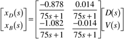

| 1: | Generate responses to step changes of ±0.01 kmol/minute in the vapor boil-up rate (V) at t = 10 minutes. Compare and contrast these responses with those of the reflux changes shown in Figure M13-3. Are these changes consistent with the transfer function matrix? |
| 2: | Consider the SISO controllers. The reader should verify through simulation that the independent controllers with IMC filter factors of 25 minutes lead to closed-loop time constants of roughly 25 minutes.
First, close the xD-L loop and make a setpoint change of 0.005 mole fraction. Next, close the xB-V loop (with xD-L open) and make a setpoint change of -0.005 mole fraction. In each case, show the change of both compositions.
|
| 3: | Consider the case where both SISO controllers are closed simultaneously. Tune the controllers tighter for the setpoint change in the "slow" direction (Figure M13-8). Decrease l1 and l2 (increase the magnitude of the proportional gains) and observe the behavior. |
| 4: | Using the tuning parameters found in Additional Exercise 3, study the response to a setpoint change if one of the loops is "opened." You should find that the other loop goes unstable or has oscillatory performance. |
| 5: | Now perform open-loop step changes on the nonlinear model. Show that the purity never changes much when it is increasing but can exhibit large changes when decreasing. |
| 6: | Perform closed-loop SIS0 studies on the nonlinear system. For small setpoint changes (say, from 0.990 to 0.991 on the distillate composition), the results are similar to the linear case. For large setpoint changes (say, from 0.990 to 0.999), the differences can become more substantial. |
| 7: | Perform closed-loop studies on the nonlinear system with both loops closed. For small setpoint changes in the most sensitive directions (say, from 0.9900 to 0.9906 on distillate and from 0.0100 to 0.0108 on bottoms), the results are similar to the linear case. |
| 8: | Consider a so-called material balance control strategy, where distillate flow is manipulated to control distillate composition. Assume the same scalings for the inputs and outputs as for the conventional control strategy. Perform an SVD analysis on the scaled gain matrix to determine the most and least sensitive setpoint change directions. Compare and contrast closed-loop simulations with those for the conventional control strategy. The transfer function model for a material balance control strategy (where D is the distillate flow rate) is

|
| 9: | The focus of the previous problems has been setpoint tracking. In this problem consider changes of ± 0.1 kmol/min in the feed flow rate and ± 0.05 mole fraction in the feed composition. Base your simulations on the matrix transfer function model presented in Section M13.1. Compare and contrast closed-loop performance when only single loops are closed vs. both loops closed. |